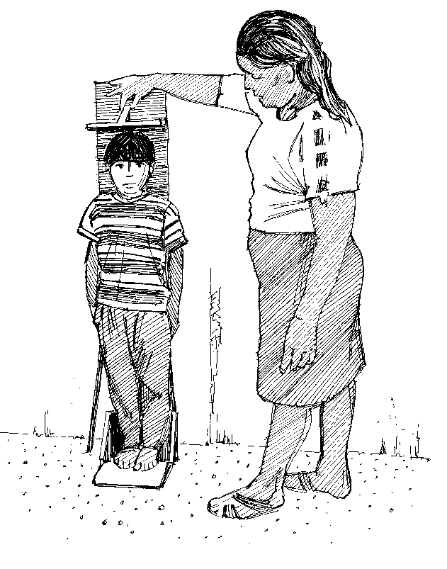
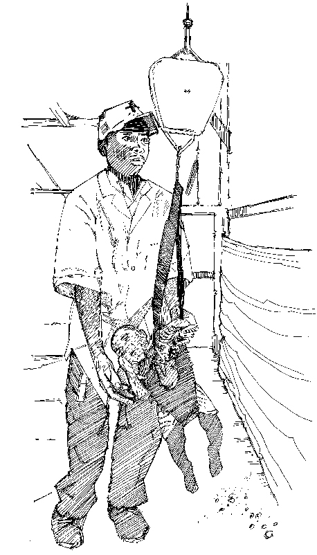

¿Por qué es importante medir la altura y el peso?
- Medir la altura y el peso ayuda a mostrar si un niño está creciendo bien.
- Si las medidas muestran que un niño está emaciado, delgado o hinchado, el niño puede tener malnutrición aguda y debe ser remitido para recibir atención y tratamiento nutricional.
Lo que necesita saber
- Es importante ser lo más preciso posible al tomar las medidas.
- La ropa y los zapatos se deben quitar al medir el peso. Los zapatos se deben retirar al medir la altura. Para tranquilizar al cuidador, intente medir en privado (por ejemplo, utilizando un biombo).
- Se requieren dos personas para tomar cada medida (particularmente la altura). Si el padre o cuidador está cerca, él o ella puede tranquilizar al niño.
- Las mediciones deben leerse en voz alta con claridad y registrarse inmediatamente para evitar el error.
Cómo medir la altura (longitud)
- Los niños menores de 2 años se miden acostados (longitud). Los niños mayores de 2 años se miden de pie (altura). La altura y la longitud significan lo mismo: la altura del niño.
Si no se conoce la edad, los niños menores de 87 cm se miden acostados. Si un niño menor de 2 años no se acuesta, mida la altura de pie y agregue 0.7 cm a la medida. Si un niño mayor de 2 años no puede pararse, mida la longitud acostada y reste 0.7 cm de la medida
Acostado
- Coloque la tabla de altura plana en el suelo o en una mesa o banco.
- Quítele los zapatos al niño y colóquelo suavemente sobre su espalda a lo largo del centro de la tabla.
- Sostenga los lados de la cabeza del niño, cubriendo las orejas y (con la ayuda del asistente o cuidador) coloque la cabeza tocando el tablero. La cabeza debe ser posicionada de manera que la línea de visión para el niño sea perpendicular al respaldar de la tabla.
- Coloque sus manos suavemente sobre los tobillos o las rodillas del niño para mantenerlas planas y derechas. Mientras coloca las piernas del niño, coloque la tabla deslizante contra las plantas de los pies del niño, para mantenerlas rectas sobre la tabla.
- La persona que mide lee en voz alta la medida al 0.1 cm más cercano.
- La medición debe repetirse. Una segunda persona la debe registrar de inmediato.
De pie
- Retire los zapatos del niño.
- Coloque al niño de pie contra el centro de la tabla de altura.
- Presione firmemente los tobillos y las rodillas del niño contra el tablero (ayudado por el asistente o cuidador), asegurándose de que su cabeza esté recta y de que esté mirando directamente al frente.
- La cabeza, los hombros, las nalgas y los talones del niño deben tocar la tabla.
- La parte deslizante de la tabla debe descansar plana contra la parte superior de la cabeza.
- La persona que mide lee en voz alta la medida al 0.1 cm más cercano.
- La medición debe repetirse. Una segunda persona la debe registrar de inmediato.
Cómo medir el peso
- El peso puede medirse utilizando una báscula de resorte colgante tipo Salter (donde el niño cuelga debajo de la báscula) o una báscula electrónica que permite medir a un niño en los brazos de los padres o cuidadores.
- El equipo debe verificarse (calibrarse) regularmente contra un peso conocido (por ejemplo, 5 litros de aceite) y siempre debe ponerse a cero antes de usarlo.
- Los bebés menores de 6 meses por lo general requieren básculas especiales para bebés, que están disponibles en hospitales o clínicas. Alternativamente, pueden ser medidos por el Salter cuando están sentados en un cabestrillo.
Usando básculas colgantes de tipo Salter
En una instalación de salud, la báscula está unida al techo o un soporte. En una comunidad, la báscula puede engancharse a un árbol o trípode o suspenderse de un palo sostenido por dos personas.
- Acople los pantalones de pesaje (o una hamaca de pesaje para bebés más pequeños) a la báscula.
- Compruebe que la aguja está en cero.
- Retire la ropa y los zapatos del niño.
- Coloque al niño en los pantalones de pesaje. Asegúrese de que el niño esté seguro, permaneciendo cerca y colocando un brazo delante y un brazo detrás del niño para mantenerlo equilibrado.
- Tome la lectura cuando el niño esté tranquilo y la aguja de la báscula haya dejado de moverse. La báscula se debe leer al nivel de los ojos y el valor se lee en voz alta a los 100 g más cercanos.
- Repita la medición. Una segunda persona debe registrarla inmediatamente.
- Si no se dispone de pantalones de pesaje, es posible suspender al niño con una prenda de ropa de la madre, o en un recipiente o cesta. En tales casos, asegúrese de que la báscula se reajuste adecuadamente a cero.
- Si (por razones culturales o por el clima) no es posible retirar la ropa, un peso promedio para la ropa debe deducirse de la medida.
Utilizando básculas electrónicas
Las básculas electrónicas son muy precisas, ya sea que estén alimentadas por una batería o por un interruptor solar. Están diseñadas para permitir que el padre o cuidador sujete al niño mientras se pesa.
- Coloque la balanza en una superficie plana en un área bien iluminada.
- Asegúrese de que los cuatro pies de la báscula estén en el suelo.
- Retire la ropa del niño.
- Encienda la báscula moviendo una mano sobre el interruptor solar. (La imagen de un adulto indica que la báscula está lista para pesar a un adulto).
- El padre o cuidador se para en la báscula primero, sin el niño. El peso se muestra y almacena en la memoria de la báscula. El adulto permanece en la balanza.
- Agite una mano sobre el interruptor solar otra vez. La báscula indica que está lista para pesar a un adulto con un niño. (Se muestra una imagen de un adulto sosteniendo a un niño.)
- El niño que se va a pesar se pasa al adulto en la báscula, quien permanece inmóvil.
- La escala muestra el peso del niño. Lea la medida en voz alta; una segunda persona la registra de inmediato.


Medición de la estatura y el peso de un niño